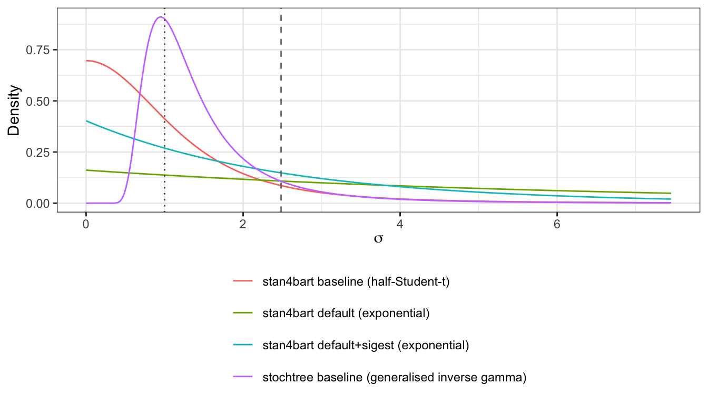
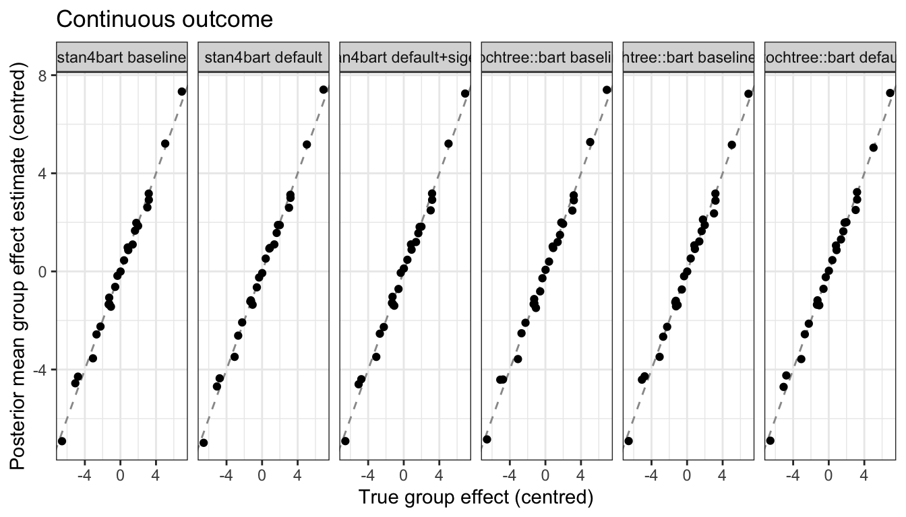
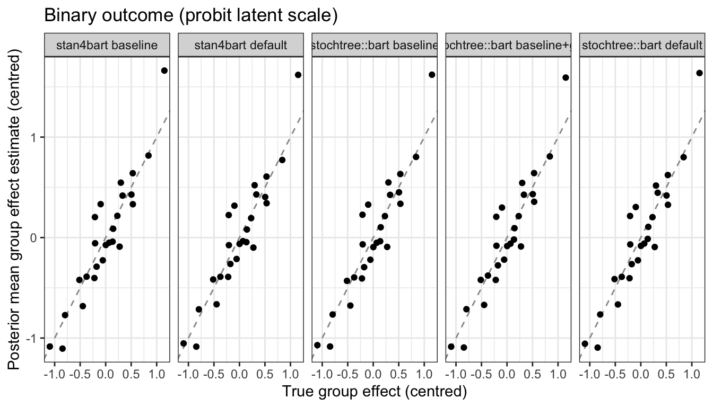
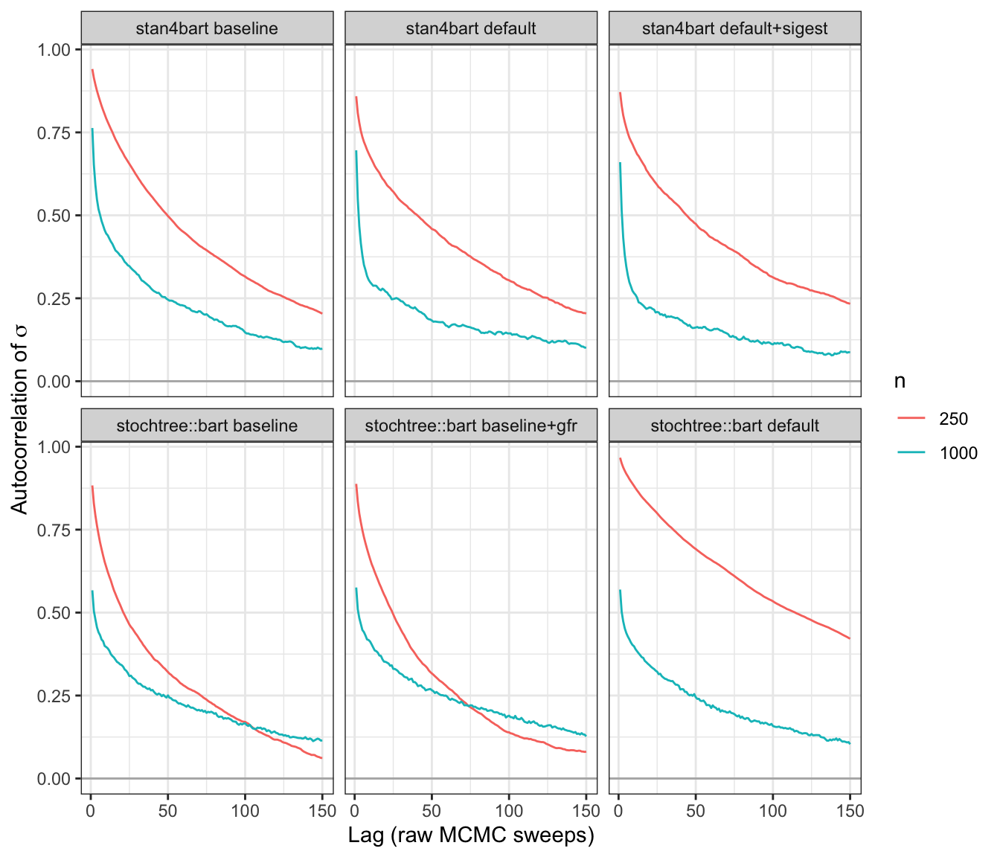
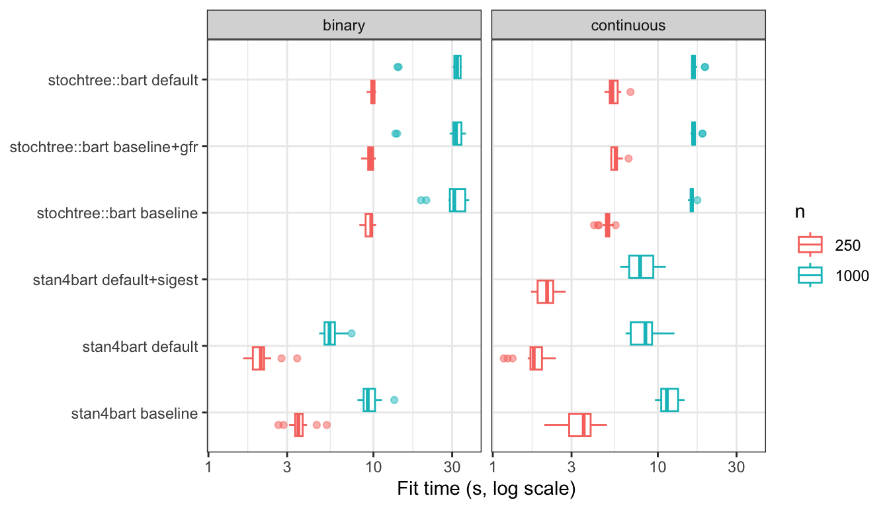

This document compares predictions from two Bayesian Additive Regression Tree (BART) packages in R that can handle the addition of group-specific random effects. The packages tested are stan4bart and stochtree.
A baseline variant is implemented for engines stan4bart::stan4bart and stochtree::bart. These attempt to match hyperprior specification across the methods, for a fair comparison. Both engines also get a default variant, using their own out-of-the-box priors instead. Note that the global variance term for stan4bart does not have an inverse gamma prior available, unlike most other BART packages, but does have several other choices (see Section 3.3 for more details).
The method stochtree::bart gets one additional variant:
baseline+gfr: using its own warm-start default and otherwise identical to baseline.
stan4bart::stan4bart gets one additional variant:
default+sigest: (for continuous only) keeps default’s prior family but calibrates its rate from a potentially more indicative variance estimate (see Section 3.3 for details).
The final number of retained draws is T=2000 in all cases.
Data generating process
The benchmarking is performed using Friedman’s function (Friedman 1991) as data-generating process. Friedman’s function is augmented with additive group-specific random intercepts with simulate_friedman_rfx()/simulate_friedman_rfx_binary() (R/dgp.R). The random-intercepts are generated with \sigma^2_G = 9 for continuous case, and \sigma^2_G = 0.25 in the binary case.
For the continuous outcome, independent N(0, \sigma^2) noise is added on top of Friedman’s function plus the group intercepts1.
Signal-to-noise metrics (continuous case)
We consider the identifiability of the mean function and group intercepts. Below we document a signal-to-noise ratio to document the problem difficulty.
This treats both the observation noise and the group intercepts as nuisance variance adding difficulty to recovering f(X). The numerator measures Friedman’s function’s variation across simulated covariates. \text{SNR}_\text{mean} = \frac{\text{Var}(f(X))}{\sigma^2 + \sigma_G^2}. This does not account for n\in \{250, 1000\}. Smaller n will also increase the problem difficulty.
The estimated variance of Friedman’s function is 24.07, against a combined nuisance variance of \sigma^2 + \sigma_G^2 = 10, giving a mean-recovery ratio of 2.41, or 1.55 on the standardised scale (square root).
Intercept recovery
This treats both the observation noise and Friedman’s function’s variation across covariates as nuisance variance. \text{SNR}_\text{intercept} = \frac{\sigma_G^2}{\text{Var}(f(X)) + \sigma^2}.
This does not account for \bar{n} = \frac{n}{n_G} \in \{ 10, 40\}. Smaller \bar{n} will also increase the problem difficulty.
The group-intercept variance is \sigma_G^2 = 9, against a combined nuisance variance of \text{Var}(f(X)) + \sigma^2 = 25.07, giving an intercept-recovery ratio of 0.36, or 0.6 on the standardised scale (square root).
For the baseline variant, most of the hyperprior parameter specification is trivial to match across packages. However, some hyperpriors are chosen based on the data itself (more or less an empirical Bayes decision).
Tree-structure prior
Naming conventions for the prior on trees differ across packages: alpha = base and beta=power.
These control the prior probability that a node at depth d splits further: P(\text{split at depth } d) = \alpha (1+d)^{-\beta}. These are constants, passed unchanged to the correct argument for each package.
Leaf-shrinkage prior
Each leaf’s contribution gets a N(0, \tau^2) prior, with \tau set from k (the number of prior standard deviations a leaf is expected to sit from the boundary of y’s range) and the number of trees:
\tau = \begin{cases}
\dfrac{\max(y) - \min(y)}{2k\sqrt{\texttt{n\_trees}}} & \text{continuous outcome - uses the data's own range} \\[8pt]
\dfrac{3}{k\sqrt{\texttt{n\_trees}}} & \text{binary outcome - calibrated to the probit latent's } \pm 3 \text{ range instead}
\end{cases}
Some differences between packages:
stan4bart calculates \tau internally from the user-specified k argument (as with dbarts::bart2).
stochtree requires the specification of \tau directly. It also standardizes continuous outcomes internally, so it requires the \tau^2 to be specified on this standardized scale instead — we calculate the standardisation manually with \tau^2 / \text{var}(y).
More generally, stochtree centres continuous responses before fitting (stochtree also rescales it, per the standardisation above), while stan4bart work on the raw scale throughout.
Global error-variance prior
Note
The following applies to the real-valued response only.
Unlike BART/dbarts there is no empirical-Bayes style calibration of the prior for the global noise variance in stochtree or stan4bart. Since we observed such a data-calibrated prior to work well in the vanilla prediction benchmark, we manually construct this calibrated prior for the baseline variants. However, only stochtree package supports inverse-gamma priors for the global variance. We develop a special matching procedure for stan4bart using truncated student-t distributions. The details are given below.
Inverse-gamma prior for stochtree
Similar to the vanilla prediction baseline variant for stochtree, we construct the data-calibrated prior of the variance as follows. A crude estimate of the variance is estimated by fitting a linear model against covariates and group-specific random effects (using lme4::lmer if it is available). We denote the residual variance estimate from this model as \hat\sigma^2.
For stochtree the prior needs to be set on the internally-standardized scale it expects for a continuous outcome, and it is specified by with shape/scale arguments. Overall, this specification is
\lambda = \hat\sigma^2 \cdot \frac{\chi^2_{\nu,\,1-\texttt{sigquant}}}{\nu},
\qquad \nu = \texttt{sigdf}, \qquad
\text{shape} = \frac{\nu}{2}, \qquad \text{scale} = \frac{\nu\lambda}{2\,\text{var}(y)},
where \chi^2_{\nu,\,p} is the p-quantile of a \chi^2_\nu distribution.
Half-Student-t prior for stan4bart
The stan4bart package specifies the global standard deviation prior via prior_aux, a convenience wrapper that can choose from a fixed set of priors (normal, student_t/cauchy, exponential, hs, hs_plus, laplace, lasso). Given the limited choices it is not possible to match the inverse-gamma distribution (on the variance) exactly.
If \sigma^2 \sim \text{IG}(\alpha, \beta), then \sigma follows a generalised inverse gamma distribution (c = 2 case) with probability density and cumulative density functions
p(\sigma) = \frac{2\beta^{\alpha}}{\Gamma(\alpha)}\, \sigma^{-2\alpha-1} \exp\!\left(-\frac{\beta}{\sigma^{2}}\right),
\qquad
F(\sigma \le s) = Q\!\left(\alpha,\, \frac{\beta}{s^{2}}\right),
where Q is the regularised upper incomplete gamma function. This is the target we will approximate for the stan4bartbaseline variant. The mode and tail behaviour of the generalised inverse gamma are:
with \alpha = \nu/2 and \beta = \nu\lambda/2. This is the target we would like the stan4bart approximation to match as closely as possible.
NoteLocation of half Student-t
We use a half Student-t prior centered at zero for the baseline variant of stan4bart. Ideally, we would vary the location parameter of the Student-t and truncate at zero, but it does not seem possible to truncate a Student-t prior that is not centered at zero in stan4bart.
Exploring fixes of this is left for future work.
We calibrate the Student-t distribution (centered at zero) on the remaining two free parameters:
Degrees of freedom is set to \nu, the same value used by every other engine’s prior - a t_\nu density decays as \sigma^{-(\nu+1)}, matching the generalised inverse gamma tail.
Scale is chosen so the sigquant-quantile of |T_\nu(0, \texttt{scale})| lands exactly on \hat\sigma, matching the same calibration principle used for every other engine’s global error-variance prior. This has a closed form: for \sigma = |T|, P(\sigma < x) = 2F_\nu(x/\texttt{scale}) - 1 where F_\nu is the t_\nu CDF, so
\texttt{sigquant} = 2F_\nu\!\left(\hat\sigma/\texttt{scale}\right) - 1
\;\Longrightarrow\;
\texttt{scale} = \frac{\hat\sigma}{F_\nu^{-1}\!\left(\dfrac{1+\texttt{sigquant}}{2}\right)}.
As the mode is fixed at 0 rather than matched to the target, this prior cannot reproduce the generalised inverse gamma’s shape (interior peak) - only its tail weight (\nu) and one quantile (\hat\sigma) carry over. The comparison plot below makes the resulting shape difference visible directly.
Comparison of priors
The default variant, which uses each package’s own out-of-the-box choice:
data-calibrated exponential prior for stan4bart on the standard deviation, and
stochtree’s default inverse-gamma is a \text{IG}(0,0) distribution (an improper Jeffery’s prior) on the variance.
accounting for the presence of subject-specific intercepts.
stochtree’s default is an improper prior with density p(\sigma^2) \propto \frac{1}{\sigma^2} on the variance, or equivalently
p(\sigma) \propto \frac{1}{\sigma},
on the standard deviation.
The following comparison plots these an example of these priors (minus the improper prior) on the standard deviation scale. The data-calibrated priors are constructed by simulating n = 250 samples and using equivalent settings to the simulation to be performed.
Code
sigma_gig_density <-function(y, alpha, beta) {2* beta^alpha /gamma(alpha) * y^(-2* alpha -1) *exp(-beta / y^2)}sigma_trunc_t_density <-function(x, df, location, scale) {ifelse(x <=0, 0,dt((x - location) / scale, df = df) / scale / (1-pt(-location / scale, df = df)) )}# One dataset, same DGP settings and same n as the benchmark's smallest run.set.seed(params$seed)sim_prior <-simulate_friedman_rfx(n =min(params$n_values), n_groups = params$n_groups,sd_group = params$sd_group_continuous, y_sd = params$y_sd)X_prior <- sim_prior$data[, setdiff(names(sim_prior$data), c("y", "group"))]y_prior <- sim_prior$data$ygroup_prior <- sim_prior$data$group# sigest via the engines' own helper, group included so the intercepts are not# absorbed into the residual; then the inverse-gamma target it implies.sigest_demo <-compute_sigest(X_prior, y_prior, group = group_prior)sigest_nogroup_demo <-compute_sigest(X_prior, y_prior)nu <- hp$sigdflambda_demo <- sigest_demo^2*qchisq(1- hp$sigquant, df = nu) / nualpha_demo <- nu /2beta_demo <- nu * lambda_demo /2# The half-Student-t actually passed to stan4bart, taken from the engine's own helper.prior_aux_demo <-hp_to_stan4bart_sigma_prior(hp, X_prior, y_prior, group = group_prior)$prior_aux# stan4bart's default: exponential(rate = 1, autoscale = TRUE) -> rate = 1/sd(y).exp_rate_demo <-1/sd(y_prior)# default+sigest: same exponential family, rate = 1/sigest instead of 1/sd(y).exp_sigest_demo <-hp_to_stan4bart_sigma_prior_exp_sigest(hp, X_prior, y_prior, group = group_prior)$prior_auxsigma_grid <-seq(1e-4, 3* sigest_demo, length.out =600)# stochtree's own default is omitted: it is the improper Jeffreys prior# (see the note below the plot), which has no density to draw.prior_curves <-bind_rows(tibble(x = sigma_grid, density =sigma_gig_density(sigma_grid, alpha_demo, beta_demo),prior ="stochtree baseline (generalised inverse gamma)"),tibble(x = sigma_grid, density =sigma_trunc_t_density(sigma_grid, prior_aux_demo$df, prior_aux_demo$location, prior_aux_demo$scale),prior ="stan4bart baseline (half-Student-t)"),tibble(x = sigma_grid, density =dexp(sigma_grid, rate = exp_rate_demo),prior ="stan4bart default (exponential)"),tibble(x = sigma_grid, density =dexp(sigma_grid, rate =1/ exp_sigest_demo$scale),prior ="stan4bart default+sigest (exponential)"))prior_curves %>%ggplot(aes(x = x, y = density, colour = prior)) +geom_line() +geom_vline(xintercept = sigest_demo, linetype ="dashed", colour ="grey50") +geom_vline(xintercept = params$y_sd, linetype ="dotted", colour ="grey30") +labs(x =expression(sigma), y ="Density", colour =NULL) +theme_bw() +theme(legend.position ="bottom") +guides(colour =guide_legend(ncol =1))

Priors on \sigma (using from a single simulated dataset for calibration at the smallest n). stochtree’s default is improper and is not shown. The dashed line marks sigest, the dotted line the true \sigma.
At n = 250 this gives \hat\sigma = 2.48 against a true \sigma = 1.
WarningFuture work
For n=250 (at least), even with \hat\sigma^2 overestimated, the bulk of the IG prior mass lines up suspiciously well with the truth. Prior sensitivity should be tested in a future benchmark.
It doesn’t seem possible with stan4bart’s existing priors to replicate the internal peak of the calibrated inverse-gamma used by stochtree.
Here we look at the recovery of the group-specific intercepts. The trees in a BART model can absorb part of the overall baseline level that would otherwise be captured in the random intercepts. That is, the group mean can be split between “trees” and “random intercepts”, so the raw random intercepts may not exactly match the true random intercepts.
To account for this we demean the intercept estimates and true values before we compare. Define \bar{\hat u} = \frac{1}{n_G}\sum_g \hat u_g and \bar u = \frac{1}{n_G}\sum_g u_g, we consider the correlation:
which is the ordinary Pearson correlation across groups (shift- and scale-invariant). It checks whether groups with a larger true effect also get a larger estimated one, in the right order. We also consider the centered RMSE:
The scatter plots below are centred the same way as the centred RMSE (see the axis labels).
Code
# Centred, matching group_effect_recovery()'s own metric definition: the# shared level between BART's trees and the random intercept isn't# identified, so only the *relative* effects are comparable.group_examples_centred <- res$group_examples %>%group_by(outcome, engine, variant) %>%mutate(true_centred = true_group_effect -mean(true_group_effect),hat_centred = group_effect_hat -mean(group_effect_hat) ) %>%ungroup()
Code
group_examples_centred %>%filter(outcome =="continuous") %>%ggplot(aes(x = true_centred, y = hat_centred)) +geom_abline(slope =1, intercept =0, colour ="grey60", linetype ="dashed") +geom_point(size =1.5) +facet_wrap(~paste(engine, variant), nrow =1) +labs(title ="Continuous outcome", x ="True group effect (centred)", y ="Posterior mean group effect estimate (centred)") +theme_bw()

Code
group_examples_centred %>%filter(outcome =="binary") %>%ggplot(aes(x = true_centred, y = hat_centred)) +geom_abline(slope =1, intercept =0, colour ="grey60", linetype ="dashed") +geom_point(size =1.5) +facet_wrap(~paste(engine, variant), nrow =1) +labs(title ="Binary outcome (probit latent scale)", x ="True group effect (centred)", y ="Posterior mean group effect estimate (centred)") +theme_bw()

Cross-engine agreement (baseline rows)
Do stan4bart and stochtree::bart agree with each other on the same simulated dataset, independent of the truth? Only baseline rows are compared, for the same reason as benchmark-prediction.qmd’s equivalent section: default and baseline+gfr use different priors or warm-start settings, which would muddy a same-prior comparison.
Here we take a look at ESS of \sigma (global standard deviation) and \sigma_G (random effect standard deviation) across the engines, variants, and settings. Then the autocorrelation plots. Later we look at the quantiles of the estiamted fit.
A low or engine-specific ESS here is a flag to interpret RMSE/coverage differences with some caution - a noisier posterior mean widens the gap between engines without either one’s model or prior actually being worse.
Autocorrelation of \sigma
Code
res$acf_global %>%filter(outcome =="continuous", lag >0) %>%group_by(engine, variant, n, lag) %>%summarise(acf =mean(acf), .groups ="drop") %>%ggplot(aes(x = lag, y = acf, colour =factor(n))) +geom_hline(yintercept =0, colour ="grey70") +geom_line() +facet_wrap(~paste(engine, variant)) +labs(x ="Lag (raw MCMC sweeps)", y =expression(paste("Autocorrelation of ", sigma)), colour ="n") +theme_bw()

Do the trees mix at the same rate?
Both engines update their residual-variance parameter conditional on the current tree ensemble every sweep. stochtree updates the random effects and variance terms each in conditional/conjugate Gibbs steps, whilst stan4bart uses a Stan HMC step for all non-Bart parameters. Here five quantiles (0.05, 0.2, 0.5, 0.8, 0.95) of the fitted values across observations are tracked, computed per retained draw.
The box plot below shows the full per-replication fit-time distribution on a log scale, which is where the outliers actually show up - as individual points well above the whiskers, rather than as a shift in a single summary number.
Code
res$metrics %>%ggplot(aes(x =paste(engine, variant), y = fit_time_sec, colour =factor(n))) +geom_boxplot(outlier.alpha =0.5) +facet_wrap(~outcome) +coord_flip() +scale_y_log10() +labs(x =NULL, y ="Fit time (s, log scale)", colour ="n") +theme_bw()

Flags
This section lists rows whose RMSE (for prediction) or centred group-effect RMSE (for recovery) is a statistical outlier (|z| > 2) within its own outcome/n setting. See flag_outliers() in R/metrics.R for the caveat about small-group z-scores - with only four rows per group here, this flagging is necessarily a coarse screen, not a precise test.